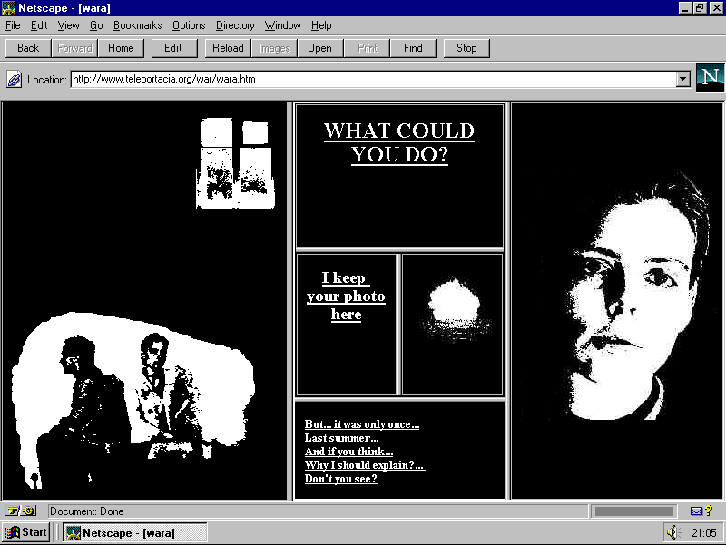

Olia Lialina
Screenshot of the artist's work

Bio
Olia Lialina is a Russian net artist and filmmaker known for her early internet artworks. Her most famous piece is “My Boyfriend Came Back From the War.” Many of her projects feature simple black-and-white layouts, frames, and clickable links. Lialina is regarded as one of the pioneers of net art and digital culture. Sources: Rhizome and Olia Lialina’s official website.
Key characteristics of the artist's work
Olia Lialina’s work features minimalist black-and-white designs, interactive elements, and storytelling. Her projects often have a nostalgic feel, evoking the look of early 1990s websites. She uses frames, GIFs, and hypertext to create emotional and experimental experiences. Her work seamlessly blends technology and narrative in a simple yet powerful way.
Links
My Boyfriend Came Back From the War